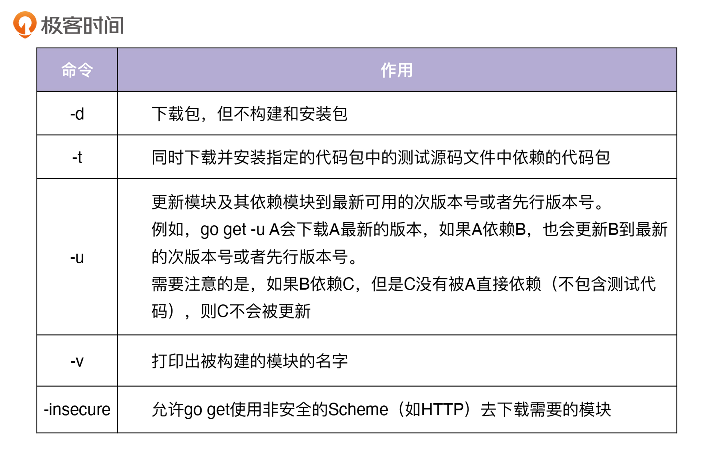

- 00 开篇词 从 0 开始搭建一个企业级 Go 应用.md
- 01 IAM系统概述：我们要实现什么样的 Go 项目？.md
- 02 环境准备：如何安装和配置一个基本的 Go 开发环境？.md
- 03 项目部署：如何快速部署 IAM 系统？.md
- 04 规范设计（上）：项目开发杂乱无章，如何规范？.md
- 05 规范设计（下）：commit 信息风格迥异、难以阅读，如何规范？.md
- 06 目录结构设计：如何组织一个可维护、可扩展的代码目录？.md
- 07 工作流设计：如何设计合理的多人开发模式？.md
- 08 研发流程设计（上）：如何设计 Go 项目的开发流程？.md
- 09 研发流程设计（下）：如何管理应用的生命周期？.md
- 10 设计方法：怎么写出优雅的 Go 项目？.md
- 11 设计模式：Go常用设计模式概述.md
- 12 API 风格（上）：如何设计RESTful API？.md
- 13 API 风格（下）：RPC API介绍.md
- 14 项目管理：如何编写高质量的Makefile？.md
- 15 研发流程实战：IAM项目是如何进行研发流程管理的？.md
- 16 代码检查：如何进行静态代码检查？.md
- 17 API 文档：如何生成 Swagger API 文档 ？.md
- 18 错误处理（上）：如何设计一套科学的错误码？.md
- 19 错误处理（下）：如何设计错误包？.md
- 20 日志处理（上）：如何设计日志包并记录日志？.md
- 21 日志处理（下）：手把手教你从 0 编写一个日志包.md
- 22 应用构建三剑客：Pflag、Viper、Cobra 核心功能介绍.md
- 23 应用构建实战：如何构建一个优秀的企业应用框架？.md
- 24 Web 服务：Web 服务核心功能有哪些，如何实现？.md
- 25 认证机制：应用程序如何进行访问认证？.md
- 26 IAM项目是如何设计和实现访问认证功能的？.md
- 27 权限模型：5大权限模型是如何进行资源授权的？.md
- 28 控制流（上）：通过iam-apiserver设计，看Web服务的构建.md
- 29 控制流（下）：iam-apiserver服务核心功能实现讲解.md
- 30 ORM：CURD 神器 GORM 包介绍及实战.md
- 31 数据流：通过iam-authz-server设计，看数据流服务的设计.md
- 32 数据处理：如何高效处理应用程序产生的数据？.md
- 33 SDK 设计（上）：如何设计出一个优秀的 Go SDK？.md
- 34 SDK 设计（下）：IAM项目Go SDK设计和实现.md
- 35 效率神器：如何设计和实现一个命令行客户端工具？.md
- 36 代码测试（上）：如何编写 Go 语言单元测试和性能测试用例？.md
- 37 代码测试（下）：Go 语言其他测试类型及 IAM 测试介绍.md
- 38 性能分析（上）：如何分析 Go 语言代码的性能？.md
- 39 性能分析（下）：API Server性能测试和调优实战.md
- 40 软件部署实战（上）：部署方案及负载均衡、高可用组件介绍.md
- 41 软件部署实战（中）：IAM 系统生产环境部署实战.md
- 42 软件部署实战（下）：IAM系统安全加固、水平扩缩容实战.md
- 43 技术演进（上）：虚拟化技术演进之路.md
- 44 技术演进（下）：软件架构和应用生命周期技术演进之路.md
- 45 基于Kubernetes的云原生架构设计.md
- 46 如何制作Docker镜像？.md
- 47 如何编写Kubernetes资源定义文件？.md
- 48 IAM 容器化部署实战.md
- 49 服务编排（上）：Helm服务编排基础知识.md
- 50 服务编排（下）：基于Helm的服务编排部署实战.md
- 51 基于 GitHub Actions 的 CI 实战.md
- 特别放送 Go Modules依赖包管理全讲.md
- 特别放送 Go Modules实战.md
- 特别放送 IAM排障指南.md
- 特别放送 分布式作业系统设计和实现.md
- 特别放送 给你一份Go项目中最常用的Makefile核心语法.md
- 特别放送 给你一份清晰、可直接套用的Go编码规范.md
- 直播加餐 如何从小白进阶成 Go 语言专家？.md
- 结束语 如何让自己的 Go 研发之路走得更远？.md
特别放送 Go Modules实战
你好，我是孔令飞。
今天我们更新一期特别放送作为加餐。在 特别放送 | Go Modules依赖包管理全讲中，我介绍了Go Modules的知识，里面内容比较多，你可能还不知道具体怎么使用Go Modules来为你的项目管理Go依赖包。
这一讲，我就通过一个具体的案例，带你一步步学习Go Modules的常见用法以及操作方法，具体包含以下内容：
- 准备一个演示项目。
- 配置Go Modules。
- 初始化Go包为Go模块。
- Go包依赖管理。
准备一个演示项目
为了演示Go Modules的用法，我们首先需要一个Demo项目。假设我们有一个hello的项目，里面有两个文件，分别是hello.go和hello_test.go，所在目录为/home/lk/workspace/golang/src/github.com/marmotedu/gopractise-demo/modules/hello。
hello.go文件内容为：
package hello
func Hello() string {
return "Hello, world."
}
hello_test.go文件内容为：
package hello
import "testing"
func TestHello(t *testing.T) {
want := "Hello, world."
if got := Hello(); got != want {
t.Errorf("Hello() = %q, want %q", got, want)
}
}
这时候，该目录包含了一个Go包，但还不是Go模块，因为没有go.mod件。接下来，我就给你演示下，如何将这个包变成一个Go模块，并执行Go依赖包的管理操作。这些操作共有10个步骤，下面我们来一步步看下。
配置Go Modules
- 打开Go Modules
确保Go版本>=go1.11，并开启Go Modules，可以通过设置环境变量export GO111MODULE=on开启。如果你觉得每次都设置比较繁琐，可以将export GO111MODULE=on追加到文件$HOME/.bashrc中，并执行 bash 命令加载到当前shell环境中。
- 设置环境变量
对于国内的开发者来说，需要设置export GOPROXY=https://goproxy.cn,direct，这样一些被墙的包可以通过国内的镜像源安装。如果我们有一些模块存放在私有仓库中，也需要设置GOPRIVATE环境变量。
因为Go Modules会请求Go Checksum Database，Checksum Database国内也可能会访问失败，可以设置export GOSUMDB=off来关闭Checksum校验。对于一些模块，如果你希望不通过代理服务器，或者不校验checksum，也可以根据需要设置GONOPROXY和GONOSUMDB。
初始化Go包为Go模块
- 创建一个新模块
你可以通过go mod init命令，初始化项目为Go Modules。 init 命令会在当前目录初始化并创建一个新的go.mod文件，也代表着创建了一个以项目根目录为根的Go Modules。如果当前目录已经存在go.mod文件，则会初始化失败。
在初始化Go Modules时，需要告知go mod init要初始化的模块名，可以指定模块名，例如go mod init github.com/marmotedu/gopractise-demo/modules/hello。也可以不指定模块名，让init自己推导。下面我来介绍下推导规则。
- 如果有导入路径注释，则使用注释作为模块名，比如：
package hello // import "github.com/marmotedu/gopractise-demo/modules/hello"
则模块名为github.com/marmotedu/gopractise-demo/modules/hello。
- 如果没有导入路径注释，并且项目位于GOPATH路径下，则模块名为绝对路径去掉
$GOPATH/src后的路径名，例如GOPATH=/home/lk/workspace/golang，项目绝对路径为/home/colin/workspace/golang/src/github.com/marmotedu/gopractise-demo/modules/hello，则模块名为github.com/marmotedu/gopractise-demo/modules/hello。
初始化完成之后，会在当前目录生成一个go.mod文件：
$ cat go.mod
module github.com/marmotedu/gopractise-demo/modules/hello
go 1.14
文件内容表明，当前模块的导入路径为github.com/marmotedu/gopractise-demo/modules/hello，使用的Go版本是go 1.14。
如果要新增子目录创建新的package，则package的导入路径自动为 模块名/子目录名 ：github.com/marmotedu/gopractise-demo/modules/hello/<sub-package-name>，不需要在子目录中再次执行go mod init。
比如，我们在hello目录下又创建了一个world包world/world.go，则world包的导入路径为github.com/marmotedu/gopractise-demo/modules/hello/world。
Go包依赖管理
- 增加一个依赖
Go Modules主要是用来对包依赖进行管理的，所以这里我们来给hello包增加一个依赖rsc.io/quote：
package hello
import "rsc.io/quote"
func Hello() string {
return quote.Hello()
}
运行go test：
$ go test
go: finding module for package rsc.io/quote
go: downloading rsc.io/quote v1.5.2
go: found rsc.io/quote in rsc.io/quote v1.5.2
go: downloading rsc.io/sampler v1.3.0
PASS
ok github.com/google/addlicense/golang/src/github.com/marmotedu/gopractise-demo/modules/hello 0.003s
当go命令在解析源码时，遇到需要导入一个模块的情况，就会去go.mod文件中查询该模块的版本，如果有指定版本，就导入指定的版本。
如果没有查询到该模块，go命令会自动根据模块的导入路径安装模块，并将模块和其最新的版本写入go.mod文件中。在我们的示例中，go test将模块rsc.io/quote解析为rsc.io/quote v1.5.2，并且同时还下载了rsc.io/quote模块的两个依赖模块：rsc.io/quote和rsc.io/sampler。只有直接依赖才会被记录到go.mod文件中。
查看go.mod文件：
module github.com/marmotedu/gopractise-demo/modules/hello
go 1.14
require rsc.io/quote v1.5.2
再次执行go test：
$ go test
PASS
ok github.com/marmotedu/gopractise-demo/modules/hello 0.003s
当我们再次执行go test时，不会再下载并记录需要的模块，因为go.mod目前是最新的，并且需要的模块已经缓存到了本地的$GOPATH/pkg/mod目录下。可以看到，在当前目录还新生成了一个go.sum文件：
$ cat go.sum
golang.org/x/text v0.0.0-20170915032832-14c0d48ead0c h1:qgOY6WgZOaTkIIMiVjBQcw93ERBE4m30iBm00nkL0i8=
golang.org/x/text v0.0.0-20170915032832-14c0d48ead0c/go.mod h1:NqM8EUOU14njkJ3fqMW+pc6Ldnwhi/IjpwHt7yyuwOQ=
rsc.io/quote v1.5.2 h1:w5fcysjrx7yqtD/aO+QwRjYZOKnaM9Uh2b40tElTs3Y=
rsc.io/quote v1.5.2/go.mod h1:LzX7hefJvL54yjefDEDHNONDjII0t9xZLPXsUe+TKr0=
rsc.io/sampler v1.3.0 h1:7uVkIFmeBqHfdjD+gZwtXXI+RODJ2Wc4O7MPEh/QiW4=
rsc.io/sampler v1.3.0/go.mod h1:T1hPZKmBbMNahiBKFy5HrXp6adAjACjK9JXDnKaTXpA=
go test在执行时，还可以添加-mod选项，比如go test -mod=vendor。-mod有3个值，我来分别介绍下。
- readonly：不更新go.mod，任何可能会导致go.mod变更的操作都会失败。通常用来检查go.mod文件是否需要更新，例如用在CI或者测试场景。
- vendor：从项目顶层目录下的vendor中导入包，而不是从模块缓存中导入包，需要确保vendor包完整准确。
- mod：从模块缓存中导入包，即使项目根目录下有vendor目录。
如果go test执行时没有-mod选项，并且项目根目录存在vendor目录，go.mod中记录的go版本大于等于1.14，此时go test执行效果等效于go test -mod=vendor。-mod标志同样适用于go build、go install、go run、go test、go list、go vet命令。
- 查看所有依赖模块
我们可以通过go list -m all命令查看所有依赖模块：
$ go list -m all
github.com/marmotedu/gopractise-demo/modules/hello
golang.org/x/text v0.0.0-20170915032832-14c0d48ead0c
rsc.io/quote v1.5.2
rsc.io/sampler v1.3.0
可以看出，除了rsc.io/quote v1.5.2外，还间接依赖了其他模块。
- 更新依赖
通过go list -m all，我们可以看到模块依赖的golang.org/x/text模块版本是v0.0.0，我们可以通过go get命令，将其更新到最新版本，并观察测试是否通过：
$ go get golang.org/x/text
go: golang.org/x/text upgrade => v0.3.3
$ go test
PASS
ok github.com/marmotedu/gopractise-demo/modules/hello 0.003s
go test命令执行后输出PASS说明升级成功，再次看下go list -m all和go.mod文件：
$ go list -m all
github.com/marmotedu/gopractise-demo/modules/hello
golang.org/x/text v0.3.3
golang.org/x/tools v0.0.0-20180917221912-90fa682c2a6e
rsc.io/quote v1.5.2
rsc.io/sampler v1.3.0
$ cat go.mod
module github.com/marmotedu/gopractise-demo/modules/hello
go 1.14
require (
golang.org/x/text v0.3.3 // indirect
rsc.io/quote v1.5.2
)
可以看到，golang.org/x/text包被更新到最新的tag版本(v0.3.3)，并且同时更新了go.mod文件。// indirect说明golang.org/x/text是间接依赖。现在我们再尝试更新rsc.io/sampler并测试：
$ go get rsc.io/sampler
go: rsc.io/sampler upgrade => v1.99.99
go: downloading rsc.io/sampler v1.99.99
$ go test
--- FAIL: TestHello (0.00s)
hello_test.go:8: Hello() = "99 bottles of beer on the wall, 99 bottles of beer, ...", want "Hello, world."
FAIL
exit status 1
FAIL github.com/marmotedu/gopractise-demo/modules/hello 0.004s
测试失败，说明最新的版本v1.99.99与我们当前的模块不兼容，我们可以列出rsc.io/sampler所有可用的版本，并尝试更新到其他版本：
$ go list -m -versions rsc.io/sampler
rsc.io/sampler v1.0.0 v1.2.0 v1.2.1 v1.3.0 v1.3.1 v1.99.99
# 我们尝试选择一个次新的版本v1.3.1
$ go get rsc.io/[email protected]
go: downloading rsc.io/sampler v1.3.1
$ go test
PASS
ok github.com/marmotedu/gopractise-demo/modules/hello 0.004s
可以看到，更新到v1.3.1版本，测试是通过的。go get还支持多种参数，如下表所示：

- 添加一个新的major版本依赖
我们尝试添加一个新的函数func Proverb，该函数通过调用rsc.io/quote/v3的quote.Concurrency函数实现。
首先，我们在hello.go文件中添加新函数：
package hello
import (
"rsc.io/quote"
quoteV3 "rsc.io/quote/v3"
)
func Hello() string {
return quote.Hello()
}
func Proverb() string {
return quoteV3.Concurrency()
}
在hello_test.go中添加该函数的测试用例：
func TestProverb(t *testing.T) {
want := "Concurrency is not parallelism."
if got := Proverb(); got != want {
t.Errorf("Proverb() = %q, want %q", got, want)
}
}
然后执行测试：
$ go test
go: finding module for package rsc.io/quote/v3
go: found rsc.io/quote/v3 in rsc.io/quote/v3 v3.1.0
PASS
ok github.com/marmotedu/gopractise-demo/modules/hello 0.003s
测试通过，可以看到当前模块同时依赖了同一个模块的不同版本rsc.io/quote和rsc.io/quote/v3：
$ go list -m rsc.io/q...
rsc.io/quote v1.5.2
rsc.io/quote/v3 v3.1.0
- 升级到不兼容的版本
在上一步中，我们使用rsc.io/quote v1版本的Hello()函数。按照语义化版本规则，如果我们想升级major版本，可能面临接口不兼容的问题，需要我们变更代码。我们来看下rsc.io/quote/v3的函数：
$ go doc rsc.io/quote/v3
package quote // import "github.com/google/addlicense/golang/pkg/mod/rsc.io/quote/[email protected]"
Package quote collects pithy sayings.
func Concurrency() string
func GlassV3() string
func GoV3() string
func HelloV3() string
func OptV3() string
可以看到，Hello()函数变成了HelloV3()，这就需要我们变更代码做适配。因为我们都统一模块到一个版本了，这时候就不需要再为了避免重名而重命名模块，所以此时hello.go内容为：
package hello
import (
"rsc.io/quote/v3"
)
func Hello() string {
return quote.HelloV3()
}
func Proverb() string {
return quote.Concurrency()
}
执行go test：
$ go test
PASS
ok github.com/marmotedu/gopractise-demo/modules/hello 0.003s
可以看到测试成功。
- 删除不使用的依赖
在上一步中，我们移除了rsc.io/quote包，但是它仍然存在于go list -m all和go.mod中，这时候我们要执行go mod tidy清理不再使用的依赖：
$ go mod tidy
[colin@dev hello]$ cat go.mod
module github.com/marmotedu/gopractise-demo/modules/hello
go 1.14
require (
golang.org/x/text v0.3.3 // indirect
rsc.io/quote/v3 v3.1.0
rsc.io/sampler v1.3.1 // indirect
)
- 使用vendor
如果我们想把所有依赖都保存起来，在Go命令执行时不再下载，可以执行go mod vendor，该命令会把当前项目的所有依赖都保存在项目根目录的vendor目录下，也会创建vendor/modules.txt文件，来记录包和模块的版本信息：
$ go mod vendor
$ ls
go.mod go.sum hello.go hello_test.go vendor world
到这里，我就讲完了Go依赖包管理常用的10个操作。
总结
这一讲中，我详细介绍了如何使用Go Modules来管理依赖，它包括以下Go Modules操作：
- 打开Go Modules；
- 设置环境变量；
- 创建一个新模块；
- 增加一个依赖；
- 查看所有依赖模块；
- 更新依赖；
- 添加一个新的major版本依赖；
- 升级到不兼容的版本；
- 删除不使用的依赖。
- 使用vendor。
课后练习
思考下，如何更新项目的所有依赖到最新的版本？
思考下，如果我们的编译机器访问不了外网，如何通过Go Modules下载Go依赖包？
欢迎你在留言区与我交流讨论，我们下一讲见。
© 2019 - 2023 Liangliang Lee. Powered by gin and hexo-theme-book.